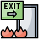

<mat-sidenav-container class="sidenav-container">
    <mat-sidenav #sidenav
                 #drawer
                 class="sidenav"
                 fixedInViewport="true"
                 (click)="toggleSidenav(sidenav)"
                 [attr.role]="shared.isMobile() ? 'dialog' : 'navigation'"
                 [mode]="shared.isMobile() ? 'over' : 'side'"
                 [opened]="!shared.isMobile()">
        <mat-toolbar color="primary">{{'app.header.menu' | translate}}</mat-toolbar>
        <mat-nav-list class="menu">
            <div class="user-name">
                <span *ngIf="shared.isMobile() && userService.isUserLogged()">{{'app.header.user-prefix' | translate}}
                    {{userService.getLoggedUser().firstName + ' ' + userService.getLoggedUser().lastName}}</span>
            </div>
            <div>
                <a *ngIf="userService.isUserLogged()" mat-list-item
                   (click)="goto('home')">
                    <fa-icon icon="home" [fixedWidth]="true"></fa-icon>
                    {{'app.header.home' | translate}}</a>
                <a *ngIf="userService.isUserLogged()" mat-list-item
                   (click)="goto('candidates')">
                    <fa-icon icon="user" [fixedWidth]="true"></fa-icon>
                    {{'app.header.candidates' | translate}}</a>
                <a *ngIf="userService.isUserLogged()" mat-list-item
                   (click)="goto('interviewers')">
                    <fa-icon icon="user-graduate" [fixedWidth]="true"></fa-icon>
                    {{'app.header.interviewers' | translate}}</a>
                <a *ngIf="userService.isUserLogged()" mat-list-item
                   (click)="goto('templates')">
                    <fa-icon icon="clipboard-list" [fixedWidth]="true"></fa-icon>
                    {{'app.header.templates' | translate}}</a>
                <a *ngIf="userService.isUserLogged()" mat-list-item
                   (click)="goto('template-criteria')">
                    <fa-icon icon="edit" [fixedWidth]="true"></fa-icon>
                    {{'app.header.template-criteria' | translate}}</a>
                <a *ngIf="userService.isUserLogged()" mat-list-item
                   (click)="goto('interviews')">
                    <fa-icon icon="user-friends" [fixedWidth]="true"></fa-icon>
                    {{'app.header.interviews' | translate}}</a>
                <a *ngIf="userService.isUserLogged() && userService.isDevUser()" mat-list-item
                   (click)="goto('batch')">
                    <fa-icon icon="briefcase" [fixedWidth]="true"></fa-icon>
                    {{'app.header.batch' | translate}}</a>
                <a *ngIf="!userService.isUserLogged()" mat-list-item
                   (click)="goto('login')">{{'app.header.button.login' | translate}}</a>
                <a *ngIf="!userService.isUserLogged()" mat-list-item
                   (click)="goto('sign-up')">{{'app.header.button.sign-up' | translate}}</a>
                <mat-accordion *ngIf="shared.isMobile()">
                    <mat-expansion-panel [expanded]="true">
                        <mat-expansion-panel-header>
                            <mat-panel-title>
                                <fa-icon icon="palette" [fixedWidth]="true"></fa-icon>
                                {{'app.header.themes' | translate}}
                            </mat-panel-title>
                        </mat-expansion-panel-header>
                        <button [ngStyle]="{'background-color':isSelected('deeppurple-amber') ? 'red' : '' }"
                                mat-menu-item (click)="onSetTheme('deeppurple-amber')">
                            <fa-icon icon="palette" [fixedWidth]="true"></fa-icon>
                            deeppurple-amber
                        </button>
                        <button [ngStyle]="{'background-color':isSelected('indigo-pink') ? 'red' : '' }" mat-menu-item
                                (click)="onSetTheme('indigo-pink')">
                            <fa-icon icon="palette" [fixedWidth]="true"></fa-icon>
                            indigo-pink
                        </button>
                        <button [ngStyle]="{'background-color':isSelected('pink-bluegrey') ? 'red' : '' }" mat-menu-item
                                (click)="onSetTheme('pink-bluegrey')">
                            <fa-icon icon="palette" [fixedWidth]="true"></fa-icon>
                            pink-bluegrey
                        </button>
                        <button [ngStyle]="{'background-color':isSelected('purple-green') ? 'red' : '' }" mat-menu-item
                                (click)="onSetTheme('purple-green')">
                            <fa-icon icon="palette" [fixedWidth]="true"></fa-icon>
                            purple-green
                        </button>
                    </mat-expansion-panel>
                </mat-accordion>
                <a *ngIf="shared.isMobile() && userService.isUserLogged()" (click)="logout()"
                   mat-list-item>
                    <fa-icon icon="sign-out-alt" [fixedWidth]="true"></fa-icon>
                    {{'app.header.button.logout' | translate}}</a>
            </div>
        </mat-nav-list>
    </mat-sidenav>
    <mat-sidenav-content>
        <mat-toolbar color="primary" class="header-control-panel">
            <div class="header-control-menu-panel">
                <button
                        (click)="drawer.toggle()"
                        *ngIf="shared.isMobile()"
                        aria-label="Toggle sidenav"
                        mat-icon-button
                        type="button">
                    <mat-icon aria-label="Side nav toggle icon">menu</mat-icon>
                </button>
                <div *ngIf="!shared.isMobile() && userService.isUserLogged()"
                     class="header-panel-el">{{'app.header.user-prefix' | translate}}
                    {{userService.getLoggedUser().firstName + ' ' + userService.getLoggedUser().lastName}}
                </div>
                
            </div>
            <div class="header-control-label-panel">
                <button mat-button [matMenuTriggerFor]="menu" *ngIf="!shared.isMobile()">
                    <mat-icon>more_vert</mat-icon>
                </button>
                <mat-menu #menu="matMenu">
                    <button *ngIf="!shared.isMobile()" mat-menu-item [matMenuTriggerFor]="themes">
                        <fa-icon icon="palette"></fa-icon>
                        {{'menu.themes' | translate}}
                    </button>
                    <button *ngIf="!shared.isMobile() && userService.isUserLogged() && userService.isDevUser()" mat-menu-item (click)="goto('batch')">
                        <fa-icon icon="briefcase"></fa-icon>
                        {{'app.header.batch' | translate}}
                    </button>
                </mat-menu>
                <mat-menu #themes="matMenu">
                    <button [ngStyle]="{'background-color':isSelected('deeppurple-amber') ? 'red' : '' }" mat-menu-item
                            (click)="onSetTheme('deeppurple-amber')">
                        <fa-icon icon="palette"></fa-icon>
                        deeppurple-amber
                    </button>
                    <button [ngStyle]="{'background-color':isSelected('indigo-pink') ? 'red' : '' }" mat-menu-item
                            (click)="onSetTheme('indigo-pink')">
                        <fa-icon icon="palette"></fa-icon>
                        indigo-pink
                    </button>
                    <button [ngStyle]="{'background-color':isSelected('pink-bluegrey') ? 'red' : '' }" mat-menu-item
                            (click)="onSetTheme('pink-bluegrey')">
                        <fa-icon icon="palette"></fa-icon>
                        pink-bluegrey
                    </button>
                    <button [ngStyle]="{'background-color':isSelected('purple-green') ? 'red' : '' }" mat-menu-item
                            (click)="onSetTheme('purple-green')">
                        <fa-icon icon="palette"></fa-icon>
                        purple-green
                    </button>
                </mat-menu>
                <form class="lang">
                    <a class="lang-el" (click)="setRuLang()">RU</a>
                    <a class="lang-el" (click)="setEnLang()">EN</a>
                </form>
                <span class="app-title">Interviewer</span>
                
            </div>
        </mat-toolbar>
        <router-outlet></router-outlet>
    </mat-sidenav-content>
</mat-sidenav-container>


